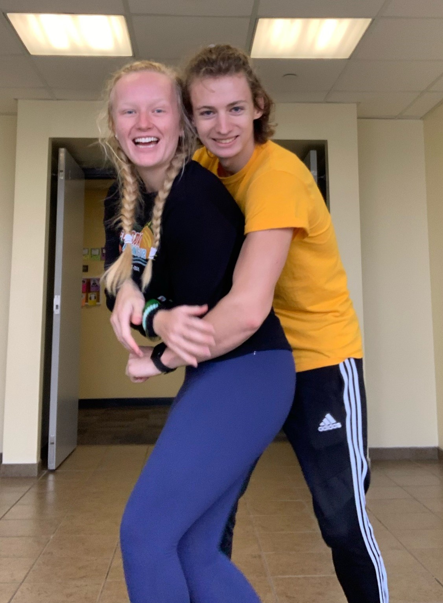
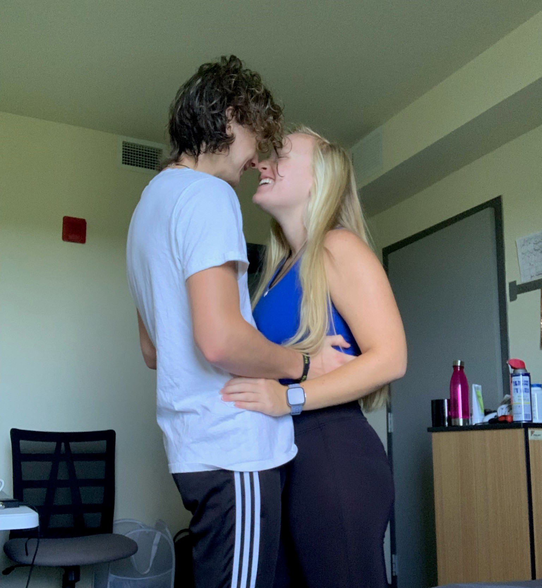

It was freshman year of college. Two 19-year olds from Wisconsin were just trying to figure out what their life was going to be like down in Florida. And, well, the rest is history.
 People always ask if we knew each other coming into college. When we both say that we're from Wisconsin, that is always the first question that they ask. But, of course, the answer is, "No, we actually met in Florida," to which they normally replay something along the lines of "Wow, what a small world!" Mackenzie's friend, Jacob, knew Thomas before coming to UCF. Jacob had told Mackenzie that there was someone named Thomas who lived on the same floor of her dorm, and that she should try to find him and introduce herself. So, being eager to meet new people, that is exactly what she did. For multiple days, she would peak her head outside of her dorm into the hallway and call out Thomas's name. Sadly, there was no reply. Until one day, a couple weeks into school, this guy named Loki stopped over to give Mackenzie's roommate Nicole some corn (that's a story for another time). Mackenzie called after Loki and asked if one of his roommates' names was Thomas. He replyed that he did have a roommate named Thomas, so Mackenzie ran across the hall to the room Loki had come from. There, she found the one named, Thomas. She quickly introduced herself. She asked if he went to Brookfield Central for high school, if he programmed, if he knew someone named Jacob Franz. When all of the answers were "yes," Mackenzie knew she had found the right Thomas. And so, the adventure began. There was plenty of spikeball played and plenty of memories made that first semester of freshman year. We had a good group of friends: four girls and four guys. It really felt like a real life version of "Friends." We would stay up until 3 or 4 in the morning playing games like Avalon or Cards Against Humanity. With college being almost 100% online (perks of freshman year of college in 2020), the only thing the eight of us really did that first semester was hang out with each other. Not every college student can say they had this same experience. We were all friends, really good friends, by the end of that first semester freshman year of college.
At least, we think we started dating in March...Second semester of freshman year of college felt pretty much the same as the first semester. There was more spikeball, more game nights, and a lot more memories made. Then, everything happened on the night of March 31st (at least, we think that's the right date, neither of us really know for sure). Thomas will say that Mackenzie made the first move, and Mackenzie will say that Thomas made the first move. However, the only thing that really matters is that someone did in fact make a move. That night, we found out we liked each other. We weren't really sure how a relationship would work. There seemed to be a lot of things that were getting in our way. But, we decided that we were going to make it work. A group of us spent Spring Break 2021 in St. Augustine. That's really were we discovered that there was a lot more to our relationship than we thought. We would stay up all night talking about our lives, our struggles, our joys and our pains. This didn't feel like a relationship that either of us had experienced before.